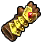

With all six elemental sages awakened, it was time to awaken the final sage despite not knowing who it was. It was made clear almost immedately, as when Link returned to the Temple of Time, Shiek was there again. With a flash of light Sheik turns into Zelda, telling Link that they were one and the same while giving Link the ability to use Light Arrows for his bow. She then gets encapsulated with a crystal as Ganondorf had become powerful enough to trap all of the seven sages. In retaliation, Link heads straight for Ganon's Castle. Ganon's Castle resides on a floating rock above a hurricane of pure darkness where Hyrule Castle used to be, there was no easy way to get to it, but with the combined power of the six other sages, they were able to create a bridge of light so that Link could enter Ganon's Castle. Here he would do puzzles similar to each temple to awake each elemental Sage again with arrows of light, gaining Golden Gauntlets in the process, allowing him to move even larger stones. Once the six sages were fully awakened, they broke the seal of darkness on the central stairway up towards Ganondorf, so Link could win the final fight. As Link headed up the spiral staircase, the organ Ganondorf was playing only got louder and louder, as the sky through stained glass windows turned darker. Soon, Link was at the top, in front of him was Ganon at the organ, Zelda in a crystal next to him. Here the Triforce parts began to resonate, as all three parts were now in the same room. Ganondorf ceased his playing turning to Link and blasting him with beam of darkness that Navi could not resist. The final battle began, Ganondorf floating above Link firing projectiles of pure darkness, Link hitting them in return with the Master Sword, morphing them into projectiles of light. Ganondorf lost to the light, the room crumbled around him as Link was victorious, as the room crumbled, so did the castle, it was only a matter of minutes before Link and Zelda would be burried under the rubble with Ganondorf if they did not act. As they ran out it was evident even Ganondorf could not survive his own castle crumbling around him, but he did. Ganondorf soon rose up from the rubble fueled by hatred and malice to become Ganon, a horrid beast that was intent on killing Link, swiping away the Master Sword and forming a circle of fire around them for their final fight. With no other weapon in hand, Link would have to use his Megaton Hammer to defeat Ganon, but there was no obvious weakspot. However, Navi wanted to help in this battle, quickly finding his weakspot was a point on his tail, so Link rolled under his legs and hit it with the hammer temporarily disabling him. Doing this dropped the circle of fire around Link and he was able to get the Master Sword back. With a matter of Light Arrows, rolls, and slashes, he was able to get Ganon down to his last hit, ending it with a blow of the Master Sword directly into Ganon's Head. The darkness had been defeated, Ganondorf was banished to be locked in the Sacred Realm, with Zelda asking that Link return the Ocarina of Time so that he could return to being a young Hyrulean again.
| PICTURE | NAME | DESCRIPTION |
|---|---|---|
|
Light Arrows | Arrow of pure light |
|  | Golden Gauntlets | Allows adult Link to pick up even heavier objects |